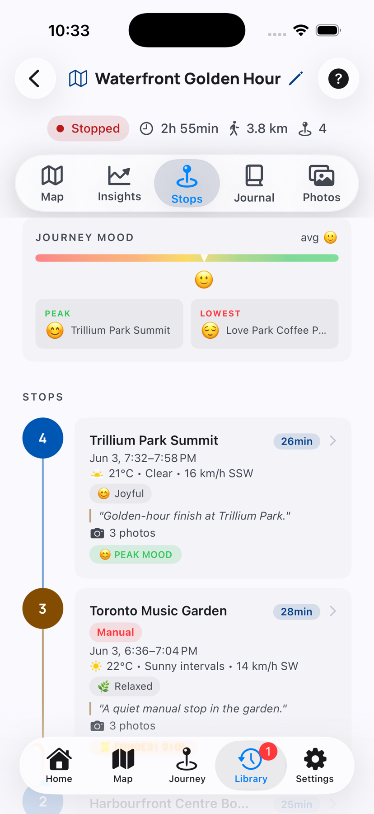
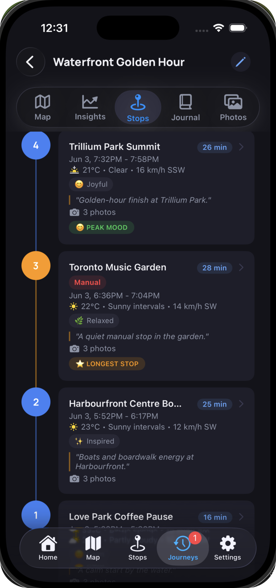

Numbered markers show the sequence of captured places.
Stops Help
Review the places DayMotion captured.
Stops collect the details that turn movement into a memory: time, duration, weather, mood, notes, photos, and highlights.


What You Can See Here
Each stop shows when you arrived, left, and how long you stayed.
Weather, mood, notes, and photo counts help each stop feel distinct.
Badges call out moments like peak mood or longest stop.
Read Stops
Use stops as the chapters of the journey.
Start with the timeline, then open a stop when you want to refine the details attached to that place.
1Scan the timeline
The numbered rail shows the journey order and helps you compare stops quickly.
2Check place and time
Each card shows the stop name, time window, and duration.
3Review memory context
Weather, mood, journal preview, and photos describe what happened there.
4Open a stop for edits
Tap a stop to adjust notes, moods, photos, and related details.
Questions
Common Stops questions
Why are stops numbered backward here?
The list can show the most recent stop first while the numbers still preserve journey order.
What does Manual mean?
A manual stop was added or adjusted by you instead of only being inferred from movement.
Where do photos go?
Photos attached to a stop appear in the stop card and in the Photos view.